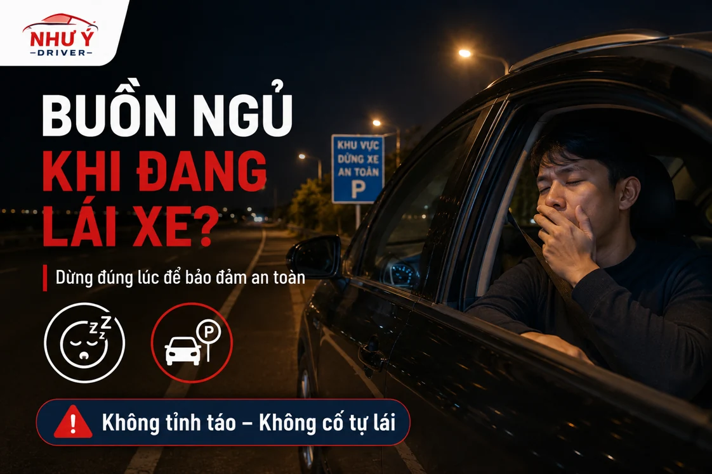

NHƯ Ý DRIVER · CẨM NANG DI CHUYỂN
Buồn ngủ khi lái xe: dừng thế nào và sắp xếp đường về ra sao?
Nếu buồn ngủ hoặc khó giữ tập trung khi lái xe, hãy ưu tiên tìm vị trí dừng phù hợp rồi sắp xếp lại hành trình. Sau khi dừng, bạn có thể nhờ người đủ điều kiện lái thay hoặc kiểm tra dịch vụ lái hộ; đừng vừa điều khiển xe vừa tìm người hỗ trợ.

Đừng lấy quãng đường còn lại làm lý do cố lái
Sau ca làm muộn, một buổi họp dài hoặc chuyến đi xa, bạn có thể chỉ muốn về đến nhà thật nhanh. Nhưng khi đã nhận thấy mình khó tập trung, việc cố chạy thêm một đoạn không giải quyết được tình trạng đó.
Nếu có người đi cùng, hãy nói rõ rằng bạn cần dừng và nhờ họ hỗ trợ tìm vị trí phù hợp. Tránh vừa lái vừa dùng điện thoại để tìm dịch vụ hoặc nhắn vị trí.
Ưu tiên đưa xe đến vị trí dừng phù hợp
Quan sát đường và biển báo để tìm nơi được phép dừng, đỗ, chẳng hạn bãi xe hoặc điểm dừng phù hợp với tuyến đang đi. Không phanh dừng đột ngột ở vị trí cản trở dòng xe. Tình huống và điều kiện đường thực tế cần được đặt lên trước kế hoạch đến nơi.
Chỉ sau khi xe đã dừng phù hợp, bạn mới nên liên hệ người thân, người đi cùng hoặc dịch vụ hỗ trợ. Nếu không thể tiếp tục hành trình, hãy sắp xếp lại việc về nhà thay vì giữ nguyên kế hoạch cũ.
Chọn người lái thay hoặc phương tiện khác
Bạn có thể nhờ một người đủ điều kiện lái thay, gọi tài xế lái hộ cho xe riêng hoặc bố trí gửi xe tại nơi cho phép rồi đi phương tiện khác. Lựa chọn phụ thuộc vị trí đang dừng, người có thể hỗ trợ và việc bạn có cần mang xe về ngay không.
Nếu chọn dịch vụ lái hộ, xem thông tin lái hộ ô tô tại Đà Nẵng. Bạn cần chờ điều phối xác nhận tài xế và giờ đón, không tự chạy tiếp chỉ để rút ngắn khoảng cách gặp.
Thông tin giúp người hỗ trợ tìm đúng xe
- Tên đường, chiều di chuyển và điểm mốc gần nơi dừng.
- Ghim vị trí, tên bãi xe hoặc khu vực được phép đỗ.
- Dòng xe, số sàn hay số tự động và biển số khi cần nhận diện.
- Số người đi cùng, điểm đến và người liên lạc.
- Lưu ý về lối vào bãi, thẻ xe hoặc thời gian địa điểm đóng cửa.
Chủ động hơn cho những chuyến đi sau
Nếu dự kiến làm việc muộn hoặc di chuyển nhiều giờ, nên cân nhắc thời gian nghỉ và người lái thay từ trước khi lên đường. Với lịch trình đi tỉnh, gửi kế hoạch sớm để trao đổi thời gian chạy, điểm dừng và lượt về.
Trước lúc giao xe, đối chiếu người nhận và báo tình trạng phương tiện. Danh sách bàn giao xe giúp bạn chuẩn bị gọn ngay cả khi đang mệt.
Chọn người lái thay hay gửi xe lại?
| Điều kiện thực tế | Phương án cần cân nhắc |
|---|---|
| Có người đi cùng đủ điều kiện lái | Trao đổi việc đổi người điều khiển sau khi xe đã dừng phù hợp. |
| Cần mang xe về cùng | Gửi vị trí và loại xe để kiểm tra lịch tài xế lái hộ. |
| Có nơi giữ xe được phép | Hỏi giờ lấy, phí bãi và bố trí phương tiện khác. |
| Chưa tìm được phương án | Nhờ người thân hỗ trợ sắp xếp lại, không lấy giờ đến nơi làm lý do cố chạy. |
Giá và lịch của chuyến hỗ trợ cần được xác nhận trực tiếp. Bạn có thể xem giá lái hộ theo loại xe sau khi đã có một vị trí dừng ổn định.
Câu hỏi thường gặp
Có nên vừa chạy vừa gọi tài xế đến gặp không?
Hãy ưu tiên dừng ở vị trí phù hợp rồi mới liên hệ. Sau đó thống nhất một điểm gặp rõ ràng và báo lại nếu buộc phải thay đổi chỗ đỗ.
Có thể để xe lại và đi phương tiện khác không?
Bạn cần hỏi địa điểm về quyền gửi xe, giờ lấy xe và chi phí trước khi lựa chọn phương án này.
Thông tin liên quan
HÃY CHỦ ĐỘNG CHO CHUYẾN ĐI
Cần người lái xe thay bạn?
Gửi điểm đón, điểm đến, loại xe và giờ đi. Như Ý Driver sẽ kiểm tra lịch, thống nhất chi phí và thời gian đón trước khi xác nhận chuyến.